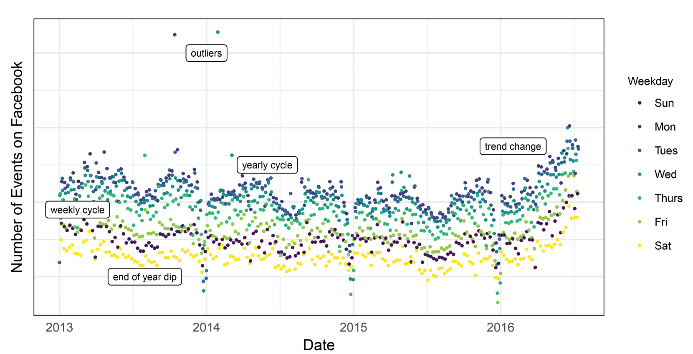
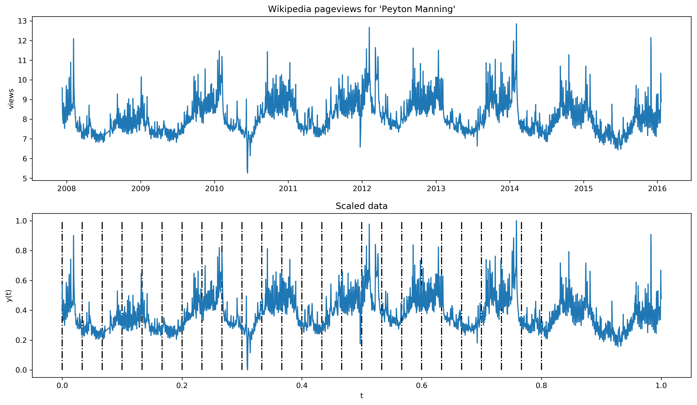

# Facebook's Prophet in PyMC3
Humanly generated data

Handling this data
S
seasonal
A
R
auto-regressive
I
integrated
M
A
moving average
X
exogenous
Generalized Additive Models
$$ y(t) = \underbrace{g(t)}_{\text{trend}} +
\underbrace{s(t)}_\text{seasonality} +
\underbrace{h(t)}_\text{holiday effects} + \epsilon_t $$
Bayesian Curve Fitting w/ PYMC3
$$ \underbrace{P(\theta|D)}_\text{posterior} =
\frac{ \overbrace{P(D|\theta)}^{\text{likelihood}} \cdot \overbrace{P(\theta)}^{\text{prior}} }
{ \underbrace{P(D)}_{\text{marginal likelihood}} }$$
Changepoints $g(t)$

$$ S
Changepoints breakdown
$$ g(t) = \underbrace{(k + a(t)^T \delta)t}_\text{trend} + \underbrace{(m + a(t)^T
\gamma)}_\text{offset} $$
- $k _\text{ base trend}$
- $\delta _\text{ growth rate adjustments}$
Changepoints breakdown
- Changepoints in vector $S$
- Growth change adjustment vector $\delta \in \mathbb{R}^S$
for every timestep $t$
$$ k + \sum_{j: t > s_j} \delta_j $$